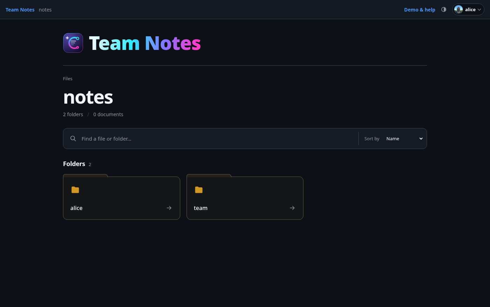
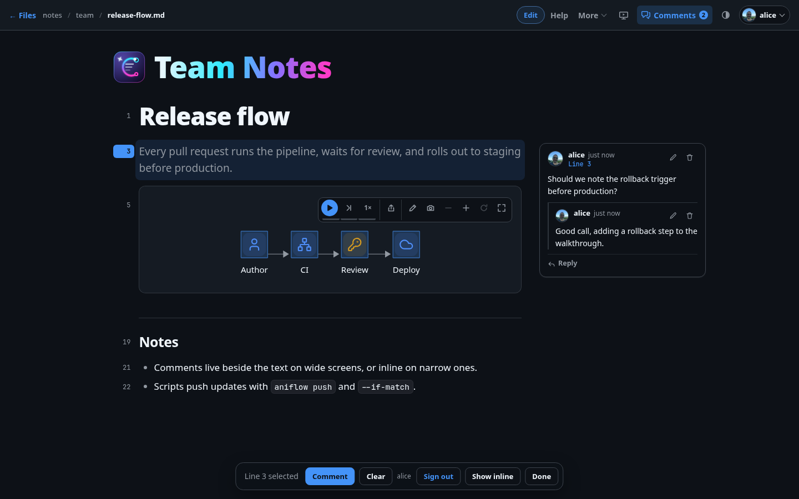
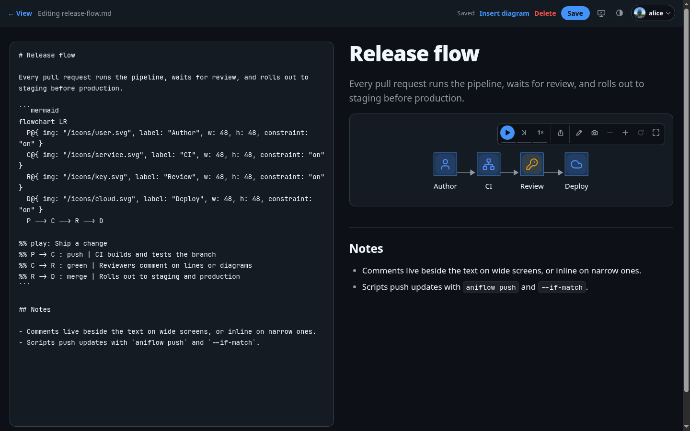

Share a folder of notes with your team.
Put aniflow behind Caddy or Docker. Everyone reads plain Markdown files; GitHub sign-in unlocks margin comments, threaded replies, a live web editor, and API tokens.

--brand and a dropped-in logo.svg and favicon.svg.Margin comments and replies
Turn on Comments on any note to highlight lines and leave feedback. On wide screens, threads sit in a margin beside the text, Google Docs style; on narrow screens or when you toggle inline, they sit directly under their lines.
Each comment supports one-level replies, carries its author's GitHub avatar, and can be copied as a quoted prompt for a coding agent. Comments are stored separately under $XDG_CACHE_HOME/aniflow so your Markdown files stay clean.

Per-user folders and live editing
Add --user-folders and every signed-in member gets their own <login>/ folder on first login with a starter note. Press Edit on a note or New note in a folder to write Markdown beside a live preview, insert an animated diagram with one click, and save with Ctrl+S.
Everyone reads everything. Members can write only in their own folder, or in any folder where you drop a hidden .aniflow-shared file from the server shell. Saves check a content hash under a lock so concurrent edits never overwrite each other.

Reverse proxy, OAuth and Docker
Pass --base /pub to mount under a subpath and --allow-host for the public hostname. Gate writes with a GitHub OAuth App (--github-oauth) and limit sign-in to active members of a GitHub organisation with --github-org.
aniflow ships its built JS, CSS, icons, and skills inside the Python wheel, so the Docker image needs only Python.
# Caddy route under /pub/ notes.example.com { handle /pub { redir * /pub/ 308 } handle /pub/* { reverse_proxy localhost:8099 } } # Start aniflow for a GitHub organisation export ANIFLOW_GITHUB_CLIENT_ID=... export ANIFLOW_GITHUB_SECRET=... export ANIFLOW_SIGNIN_SECRET=$(openssl rand -base64 48) export ANIFLOW_GITHUB_ORGS=my-org export ANIFLOW_COMMENTS_ADMIN=alice aniflow /notes --host 0.0.0.0 --port 8080 \ --base /pub --allow-host notes.example.com \ --brand "Team Notes" --user-folders # Mark a shared team folder writable by all members touch /notes/team/.aniflow-shared